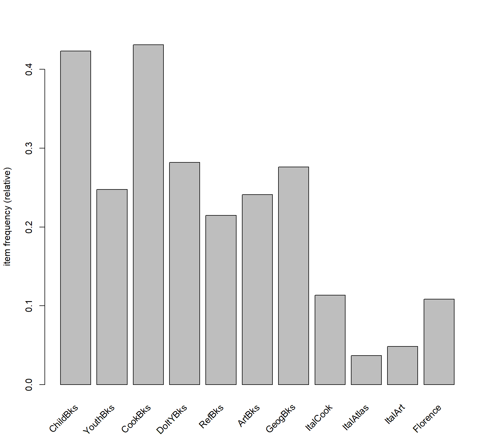
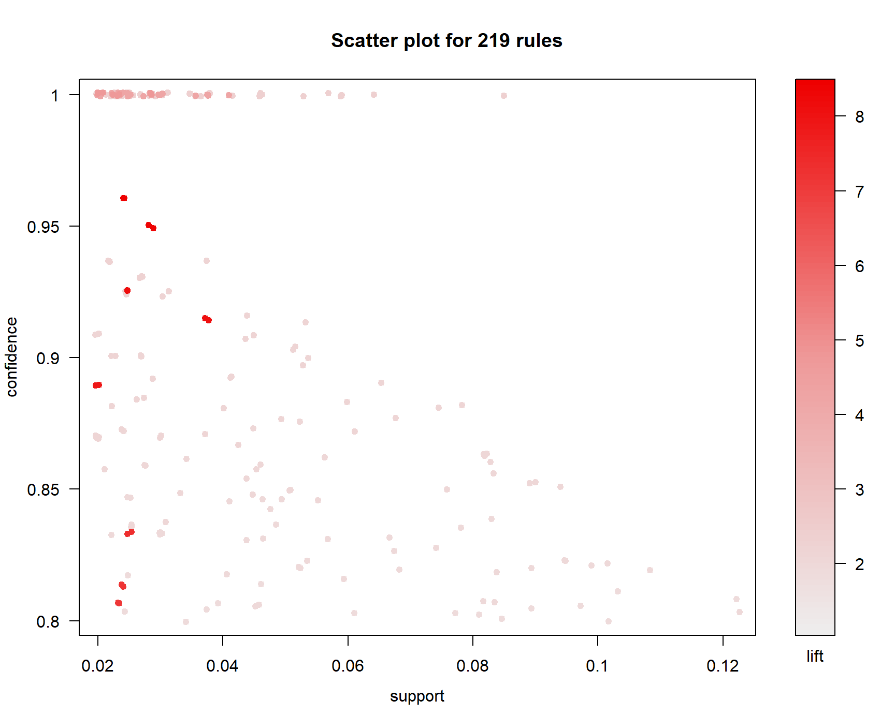
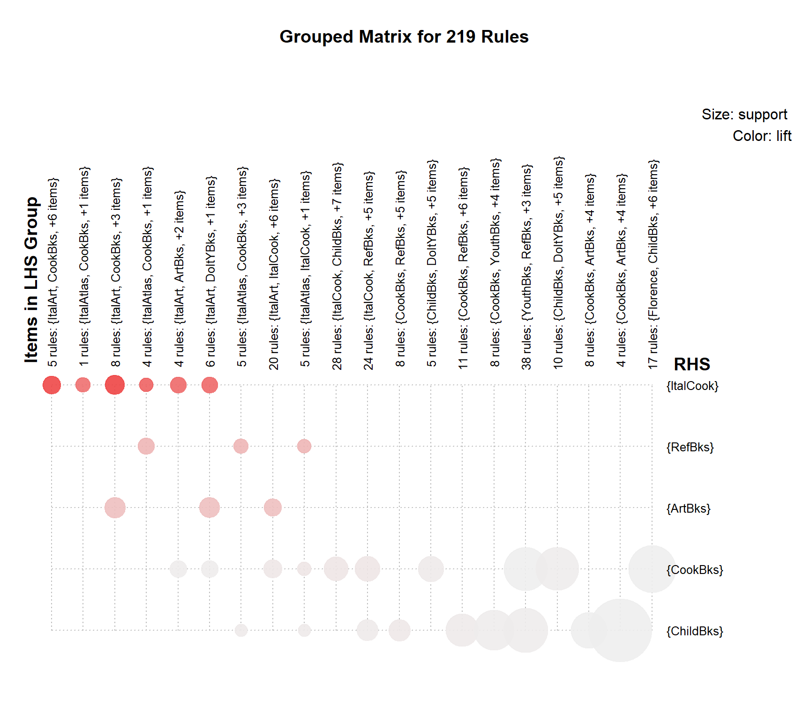
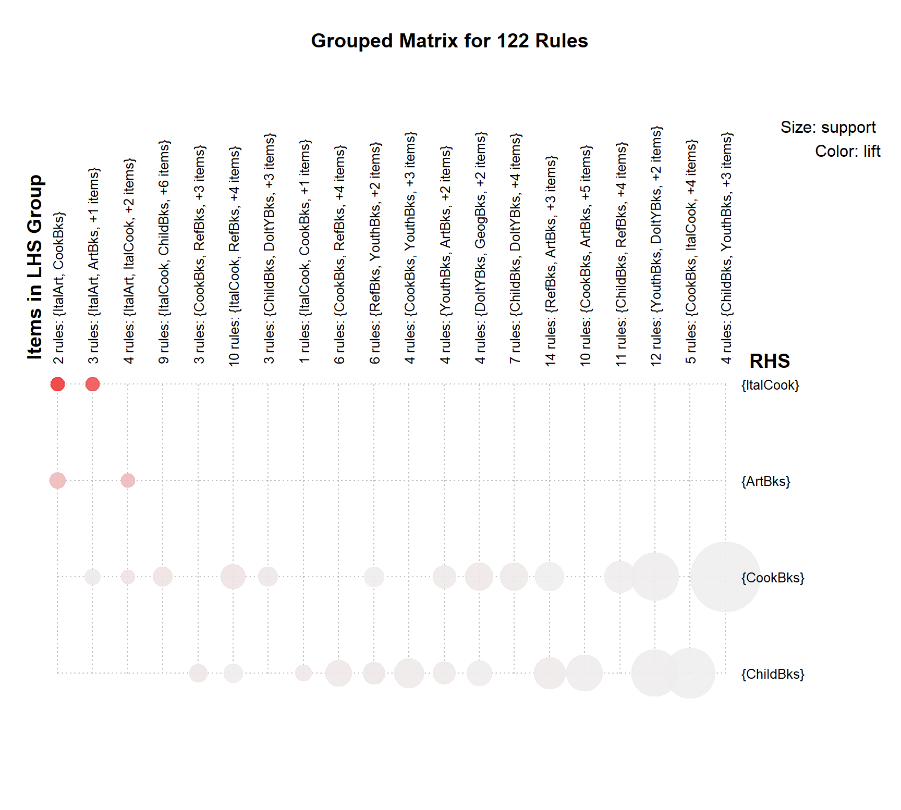

library(arules)
library(arulesViz)book <- read.csv('C:/Users/Alex/Downloads/book.csv')
class(book) ## [1] "data.frame"summary(book)## ChildBks YouthBks CookBks DoItYBks
## Min. :0.000 Min. :0.0000 Min. :0.000 Min. :0.000
## 1st Qu.:0.000 1st Qu.:0.0000 1st Qu.:0.000 1st Qu.:0.000
## Median :0.000 Median :0.0000 Median :0.000 Median :0.000
## Mean :0.423 Mean :0.2475 Mean :0.431 Mean :0.282
## 3rd Qu.:1.000 3rd Qu.:0.0000 3rd Qu.:1.000 3rd Qu.:1.000
## Max. :1.000 Max. :1.0000 Max. :1.000 Max. :1.000
## RefBks ArtBks GeogBks ItalCook
## Min. :0.0000 Min. :0.000 Min. :0.000 Min. :0.0000
## 1st Qu.:0.0000 1st Qu.:0.000 1st Qu.:0.000 1st Qu.:0.0000
## Median :0.0000 Median :0.000 Median :0.000 Median :0.0000
## Mean :0.2145 Mean :0.241 Mean :0.276 Mean :0.1135
## 3rd Qu.:0.0000 3rd Qu.:0.000 3rd Qu.:1.000 3rd Qu.:0.0000
## Max. :1.0000 Max. :1.000 Max. :1.000 Max. :1.0000
## ItalAtlas ItalArt Florence
## Min. :0.000 Min. :0.0000 Min. :0.0000
## 1st Qu.:0.000 1st Qu.:0.0000 1st Qu.:0.0000
## Median :0.000 Median :0.0000 Median :0.0000
## Mean :0.037 Mean :0.0485 Mean :0.1085
## 3rd Qu.:0.000 3rd Qu.:0.0000 3rd Qu.:0.0000
## Max. :1.000 Max. :1.0000 Max. :1.0000str(book)## 'data.frame': 2000 obs. of 11 variables:
## $ ChildBks : int 0 1 0 1 0 1 0 0 1 1 ...
## $ YouthBks : int 1 0 0 1 0 0 1 1 0 1 ...
## $ CookBks : int 0 0 0 1 1 0 0 0 0 1 ...
## $ DoItYBks : int 1 0 0 0 0 0 0 0 1 0 ...
## $ RefBks : int 0 0 0 1 0 0 0 1 0 0 ...
## $ ArtBks : int 0 0 0 0 0 1 0 0 0 0 ...
## $ GeogBks : int 1 0 0 1 1 0 0 0 0 1 ...
## $ ItalCook : int 0 0 0 0 0 0 0 0 0 0 ...
## $ ItalAtlas: int 0 0 0 0 0 0 0 0 0 0 ...
## $ ItalArt : int 0 0 0 0 0 0 0 0 0 0 ...
## $ Florence : int 0 0 0 0 0 1 0 0 0 0 ...head(book, n=10)This data cannot be imported as transactions but we can work with it in itemMatrix format
book <- as(as.matrix(book), "itemMatrix")
inspect(head(book))## items
## [1] {YouthBks,DoItYBks,GeogBks}
## [2] {ChildBks}
## [3] {}
## [4] {ChildBks,YouthBks,CookBks,RefBks,GeogBks}
## [5] {CookBks,GeogBks}
## [6] {ChildBks,ArtBks,Florence}itemFrequencyPlot(book) # item frequency plot
We’ll use apriori algorithm with support=0.02 and confidence=0.8
bk_rule <- apriori(book,
parameter = list(support=0.02,
confidence=0.8,
minlen=3)) # we'll be using minlen=3 as we want atleast 3 books placed next to each other## Apriori
##
## Parameter specification:
## confidence minval smax arem aval originalSupport maxtime support minlen
## 0.8 0.1 1 none FALSE TRUE 5 0.02 3
## maxlen target ext
## 10 rules FALSE
##
## Algorithmic control:
## filter tree heap memopt load sort verbose
## 0.1 TRUE TRUE FALSE TRUE 2 TRUE
##
## Absolute minimum support count: 40
##
## set item appearances ...[0 item(s)] done [0.00s].
## set transactions ...[11 item(s), 2000 transaction(s)] done [0.00s].
## sorting and recoding items ... [11 item(s)] done [0.00s].
## creating transaction tree ... done [0.00s].
## checking subsets of size 1 2 3 4 5 6 done [0.00s].
## writing ... [219 rule(s)] done [0.00s].
## creating S4 object ... done [0.00s].bk_rule # we get 219 rules## set of 219 rulesinspect(head(sort(bk_rule, by="lift"), n=10)) # view top 10 rules sorted by Lift## lhs rhs support confidence
## [1] {CookBks,GeogBks,ItalArt} => {ItalCook} 0.0240 0.9600000
## [2] {CookBks,ArtBks,GeogBks,ItalArt} => {ItalCook} 0.0240 0.9600000
## [3] {ChildBks,CookBks,ItalArt} => {ItalCook} 0.0285 0.9500000
## [4] {ChildBks,CookBks,ArtBks,ItalArt} => {ItalCook} 0.0285 0.9500000
## [5] {CookBks,DoItYBks,ItalArt} => {ItalCook} 0.0250 0.9259259
## [6] {CookBks,DoItYBks,ArtBks,ItalArt} => {ItalCook} 0.0250 0.9259259
## [7] {CookBks,ItalArt} => {ItalCook} 0.0375 0.9146341
## [8] {CookBks,ArtBks,ItalArt} => {ItalCook} 0.0375 0.9146341
## [9] {ChildBks,CookBks,ItalAtlas} => {ItalCook} 0.0200 0.8888889
## [10] {ChildBks,CookBks,RefBks,ItalAtlas} => {ItalCook} 0.0200 0.8888889
## lift count
## [1] 8.458150 48
## [2] 8.458150 48
## [3] 8.370044 57
## [4] 8.370044 57
## [5] 8.157938 50
## [6] 8.157938 50
## [7] 8.058451 75
## [8] 8.058451 75
## [9] 7.831620 40
## [10] 7.831620 40plot(bk_rule)## To reduce overplotting, jitter is added! Use jitter = 0 to prevent jitter.
plot(bk_rule, method='grouped') # Grouped Plot
plot(bk_rule,
method='graph',
engine='htmlwidget',
measure='lift',
control=list(max=20)) # Graph Plot for top 20 rules based on Lift ## Warning: Too many rules supplied. Only plotting the best 20 rules using lift
## (change control parameter max if needed)We’ll create new set of rules with support=0.035 and confidence=0.75
bk_rule2 <- apriori(book, parameter = list(support=0.035, confidence=0.75, minlen=3))## Apriori
##
## Parameter specification:
## confidence minval smax arem aval originalSupport maxtime support minlen
## 0.75 0.1 1 none FALSE TRUE 5 0.035 3
## maxlen target ext
## 10 rules FALSE
##
## Algorithmic control:
## filter tree heap memopt load sort verbose
## 0.1 TRUE TRUE FALSE TRUE 2 TRUE
##
## Absolute minimum support count: 70
##
## set item appearances ...[0 item(s)] done [0.00s].
## set transactions ...[11 item(s), 2000 transaction(s)] done [0.00s].
## sorting and recoding items ... [11 item(s)] done [0.00s].
## creating transaction tree ... done [0.00s].
## checking subsets of size 1 2 3 4 5 done [0.00s].
## writing ... [122 rule(s)] done [0.00s].
## creating S4 object ... done [0.00s].bk_rule2 # we get 122 rules## set of 122 rulesinspect(head(sort(bk_rule2, by="lift"), n = 10)) # View top 10 rules based on lift## lhs rhs support confidence lift count
## [1] {CookBks,ItalArt} => {ItalCook} 0.0375 0.9146341 8.058451 75
## [2] {CookBks,ArtBks,ItalArt} => {ItalCook} 0.0375 0.9146341 8.058451 75
## [3] {ArtBks,ItalArt} => {ItalCook} 0.0375 0.7731959 6.812298 75
## [4] {ItalCook,ItalArt} => {ArtBks} 0.0375 1.0000000 4.149378 75
## [5] {ChildBks,ItalArt} => {ArtBks} 0.0360 1.0000000 4.149378 72
## [6] {CookBks,ItalArt} => {ArtBks} 0.0410 1.0000000 4.149378 82
## [7] {CookBks,ItalCook,ItalArt} => {ArtBks} 0.0375 1.0000000 4.149378 75
## [8] {ItalCook,ItalArt} => {CookBks} 0.0375 1.0000000 2.320186 75
## [9] {RefBks,ItalCook} => {CookBks} 0.0465 1.0000000 2.320186 93
## [10] {YouthBks,ItalCook} => {CookBks} 0.0590 1.0000000 2.320186 118inspect(head(sort(bk_rule2, by="confidence"), n = 10)) # View top 10 rules based on confidence## lhs rhs support confidence lift count
## [1] {ItalCook,ItalArt} => {ArtBks} 0.0375 1 4.149378 75
## [2] {ItalCook,ItalArt} => {CookBks} 0.0375 1 2.320186 75
## [3] {ChildBks,ItalArt} => {ArtBks} 0.0360 1 4.149378 72
## [4] {CookBks,ItalArt} => {ArtBks} 0.0410 1 4.149378 82
## [5] {RefBks,ItalCook} => {CookBks} 0.0465 1 2.320186 93
## [6] {YouthBks,ItalCook} => {CookBks} 0.0590 1 2.320186 118
## [7] {ArtBks,ItalCook} => {CookBks} 0.0565 1 2.320186 113
## [8] {DoItYBks,ItalCook} => {CookBks} 0.0585 1 2.320186 117
## [9] {GeogBks,ItalCook} => {CookBks} 0.0640 1 2.320186 128
## [10] {ChildBks,ItalCook} => {CookBks} 0.0850 1 2.320186 170plot(bk_rule2, method="grouped") # Grouped plot
plot(bk_rule2,
method='graph',
measure='lift',
engine='htmlwidget',
control=list(max=20)) # graph plot with top 20 rules## Warning: Too many rules supplied. Only plotting the best 20 rules using lift
## (change control parameter max if needed)We can place ItalCook next to sections for ItalArt, ArtBks and CookBks
We can place ArtBks next to sections for ItalArt and CookBks
CookBks can be placed near sections for ChildBks, YouthBks, RefBks and ItalCook sections
END
Click on the next tab for Association Rules based on Movie dataset